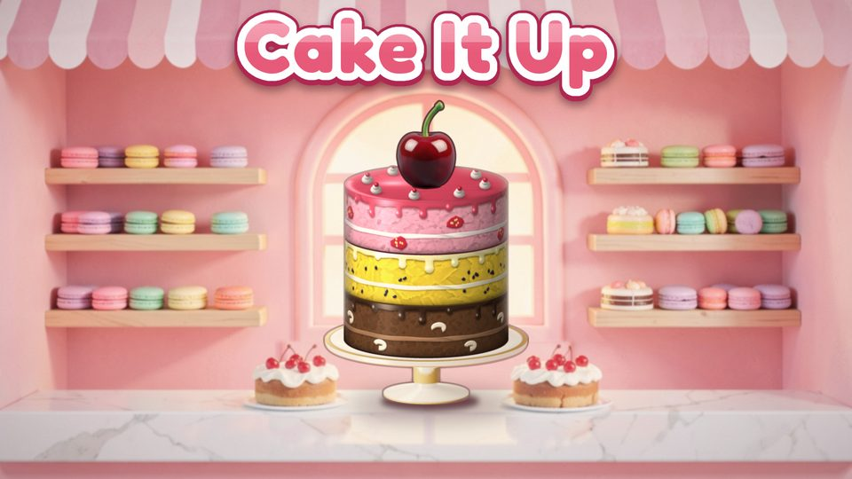
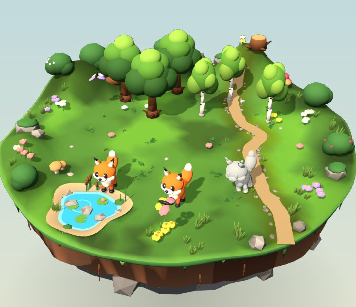
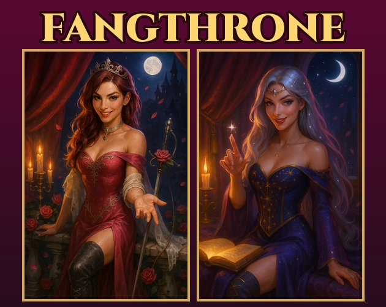

PuzzleAll ages
Cake It Up
Sort the layers, stack the perfect cake. A relaxing sorting puzzle with hundreds of levels, daily cakes and a little bakery of your own.
We are an independent studio making colourful, hand-crafted games for phones and the web. Free to play, made to be picked up in a spare minute and loved for months.

Sort the layers, stack the perfect cake. A relaxing sorting puzzle with hundreds of levels, daily cakes and a little bakery of your own.

Put your phone down and a living sanctuary grows. Stay focused to raise foxes, fish and forests across three habitats. Leave too soon, and they turn to stone.

Rule a monster kingdom, conquer the realm and win the hearts of the most dangerous princesses alive. For adults only.
Every game starts with how it looks. We hand-pick and refine every scene, character and creature.
Our games reward the time you spend playing, not the time you spend waiting.
Our games are free. Optional ads give a boost when you want one, and never block the way forward.